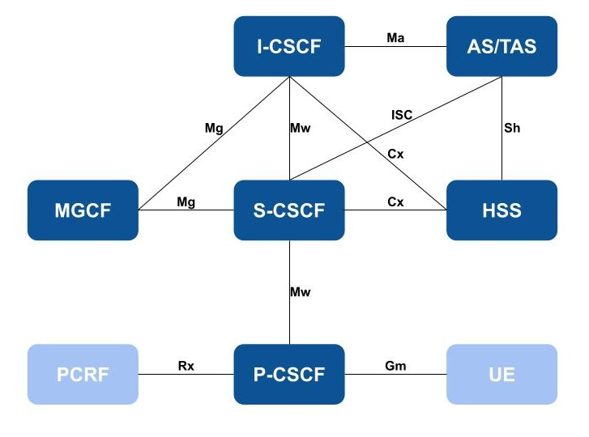

Introduction of IP Multimedia Subsystem Part 1
Note
Author: Elisa Lee
Date: 2023/11/08
The IMS is a framework for delivering multimedia and voice services over IP networks. It plays a crucial role in enabling communication services like voice, video, and messaging to be delivered in a converged, efficient, and scalable manner.
Definition and Overview of IMS
Introduction to IMS
A standardized, open architectural framework that allows multimedia services to be delivered over IP networks. It is defined by the 3GPP (3rd Generation Partnership Project) and widely used in mobile networks.
Purpose and Significance of IMS
Purpose of IMS
Multimedia Services
IMS is designed to support a wide range of multimedia services such as voice, video, messaging, and data services over IP networks.
Interoperability
It provides a standardized architecture that allows different network elements and applications from various vendors to work together seamlessly. This promotes interoperability, which is vital in a diverse telecommunications ecosystem.
Service Convergence
IMS allows the convergence of various services like voice, video, and data onto a single IP network. This makes it possible for users to access multiple services through a unified interface.
Quality of Service (QoS)
IMS enables network operators to prioritize and manage different types of traffic, ensuring that services like voice and video receive the necessary bandwidth and low latency for a high-quality user experience.
Session Management
It manages sessions for different types of services, ensuring that sessions are established, maintained, and terminated appropriately.
Mobility Management
IMS allows for seamless mobility across different access networks (e.g., Wi-Fi, LTE, 5G), ensuring continuity of services as users move between different coverage areas.
Security
IMS incorporates security features and protocols to protect the confidentiality, integrity, and authenticity of communication sessions.
Billing and Charging
It supports real-time charging and billing capabilities, allowing operators to accurately charge users for the services they consume.
Significance of IMS
Transition to All-IP Networks
IMS is a key enabler in the shift from traditional circuit-switched networks to all-IP networks. This transition is essential for supporting advanced multimedia services.
Facilitates 4G and 5G Technologies
IMS is a critical component for the deployment and operation of 4G LTE and 5G networks, providing the infrastructure for delivering high-speed data services and advanced multimedia applications.
Enhances User Experience
By enabling the delivery of high-quality multimedia services, IMS significantly enhances the user experience, particularly for applications like video calling, streaming, and real-time gaming.
Enables Next-Generation Services
IMS is foundational for emerging technologies like IoT (Internet of Things) and Industry 4.0, enabling a wide range of applications and services across various industries.
Promotes Innovation
IMS's standardized architecture encourages innovation by allowing developers to create new services and applications that can run on IMS-enabled networks.
Global Standardization
IMS is based on international standards defined by organizations like 3GPP and ETSI (European Telecommunications Standards Institute), ensuring global compatibility and uniformity in telecommunications networks.
Key Components of IMS
SIP (Session Initiation Protocol)
SIP is a signaling protocol used for initiating, maintaining, modifying, and terminating real-time sessions that involve video, voice, messaging, and other communications applications and services over the internet. It operates at the application layer of the OSI model and is widely used for VoIP (Voice over Internet Protocol) and other multimedia communication applications.
Role of SIP in IMS
In the context of IMS, SIP serves as the primary signaling protocol.
Session Establishment
SIP is used to initiate communication sessions between devices or applications. When a user wants to make a call, send a message, or establish a multimedia session, SIP is responsible for setting up the connection.
User Location and Registration
SIP allows devices to register their location on the network. This information is crucial for routing calls and messages to the correct destination.
Call Control
SIP handles the signaling for call control functions such as call setup, call hold, call transfer, and call release. It defines how these operations should be communicated between endpoints.
Service Invocation
It enables the invocation of various services within IMS, like call forwarding, call waiting, and supplementary services.
Session Modification and Termination
SIP is also responsible for modifying existing sessions (e.g., adding participants to a call) and terminating sessions when the user ends the communication.
Media Negotiation
While SIP is responsible for signaling, it doesn't handle the actual media (audio, video, etc.) transfer. It works in conjunction with protocols like RTP (Real-time Transport Protocol) for media transmission.
Signaling for establishing, modifying, and terminating sessions
Session Establishment:
-
Caller's Request:
The caller's device sends a SIP INVITE message to the SIP server, indicating the intention to establish a session with the callee. -
SIP Server Processing:
The SIP server processes the INVITE message. It checks the user's location and forwards the request to the recipient's SIP server. -
Recipient's Response:
The recipient's SIP server delivers the INVITE message to the callee's device. If the recipient is available and agrees to the session, their device sends a SIP 200 OK response back. -
Session Establishment:
Once the caller's device receives the 200 OK response, it acknowledges the establishment of the session. The media streams (audio, video, etc.) can then begin.
Session Modification
If a user wants to modify an ongoing session, such as adding another participant to a call, the SIP signaling is used to send an UPDATE request. This request is processed by the SIP servers and communicated to the affected parties.
Session Termination
When a user decides to end a session, their device sends a SIP BYE message. This message is processed by the SIP servers, and the appropriate responses are sent to indicate the termination of the session.
It's important to note that SIP is a text-based protocol, and it uses URLs similar to those used on the web to identify users and services. This makes it versatile and easy to integrate into existing internet infrastructure.
SDP (Session Description Protocol)
The SDP is a protocol used in multimedia communications to negotiate and describe sessions between participants. It provides a concise and human-readable way to convey information about the characteristics of a multimedia session.
Role of SDP in session negotiation and description
Session Negotiation
-
Media Types:
This includes information about the type of media (e.g., audio, video, application data) that will be exchanged during the session. -
Codecs and Formats:
SDP specifies which codecs (compression/decompression algorithms) and formats will be used for media encoding and decoding. -
Transport Protocols:
It describes the transport protocol and ports that will be used for sending and receiving media packets. -
Network Addresses:
SDP provides information about the IP addresses and ports where media should be sent. -
Timing and Synchronization:
SDP can include information about timing aspects like session start and end times, as well as synchronization of different media streams.
Session Description
SDP accomplishes session description by providing a structured text-based format that includes information about the session parameters mentioned above. This description is typically conveyed in the form of an SDP message.
Negotiating Capabilities
-
Establishing Media Streams:
SDP is crucial for establishing media streams. It specifies how media should be encoded, transported, and synchronized between participants. This ensures that audio, video, and other data are transmitted and received correctly. -
Interoperability:
SDP is a standardized format, allowing devices and applications from different vendors to communicate effectively. This promotes interoperability, which is crucial in diverse multimedia environments. -
Dynamic Adaptation:
SDP can be updated dynamically during a session. For example, if network conditions change, SDP can be used to renegotiate parameters like codecs or bitrates to ensure the best possible quality.
HSS (Home Subscriber Server)
The HSS is a crucial component within the IMS architecture. It serves as a central database that stores and manages subscriber-related information for users in a telecommunications network.
Definition and function of HSS in IMS
Definition
The HSS is a core network element in the IMS architecture. It is a centralized database that contains essential information about subscribers, including their identities, services, and authentication credentials. The HSS plays a pivotal role in facilitating various services and functions within IMS.
Function of HSS in IMS
-
Subscriber Profile Management:
The HSS stores detailed information about each subscriber, including their IMS public user identity, contact information, allocated services, and preferences. This data is used for session setup, authorization, and routing decisions. -
Authentication and Authorization:
HSS is responsible for authenticating users when they attempt to access IMS services. It verifies the subscriber's credentials (such as username and password) before granting access. Additionally, it provides information about the services and capabilities available to each subscriber. -
Subscriber Location:
It keeps track of the location of subscribers within the network. This information is crucial for routing calls and messages to the appropriate serving network element. -
Security Functions:
The HSS plays a role in the security architecture of IMS. It stores security-related keys and information necessary for secure communication between the subscriber's device and the IMS network. -
Policy and Charging Control (PCC):
HSS may also be involved in policy control and charging decisions. It provides information about the subscriber's subscription and policy rules that dictate how services are delivered and charged.
Managing subscriber data and authentication
Managing Subscriber Data
-
Subscriber Registration:
When a subscriber logs into the network, the HSS is involved in the registration process. It verifies the subscriber's identity and allocates necessary resources and services. -
Profile Updates:
The HSS is responsible for updating subscriber profiles. This includes adding or removing services, updating contact information, or changing authentication credentials. -
Roaming Support:
In the case of roaming, the HSS plays a key role in managing the subscriber's information, ensuring that services can be delivered seamlessly across different networks.
Authentication
-
Challenge-Response Mechanism:
When a subscriber attempts to access IMS services, the HSS challenges the subscriber's device for authentication credentials. -
Verifying Credentials:
The HSS verifies the subscriber's credentials using authentication algorithms and keys. This ensures that only authorized users can access the network. -
Generating Security Tokens:
After successful authentication, the HSS generates security tokens that are used to secure the communication sessions between the subscriber's device and the network. -
Subscriber Privacy and Security:
The authentication process ensures that subscriber information and communication sessions are protected from unauthorized access and interception.
CSCF (Call Session Control Function)
The CSCF is a crucial element in the IMS architecture, responsible for handling call/session control and routing within the network. There are three types of CSCFs, each serving specific roles in the IMS framework.
Proxy CSCF (P-CSCF)
The P-CSCF is a vital component within the IMS architecture. It serves as the initial point of contact for UE (User Equipment) when establishing communication sessions. The P-CSCF behaves as a proxy, managing incoming requests by either processing them internally or forwarding them to appropriate destinations. It does not modify the Request URI in the SIP INVITE message. In certain scenarios, the P-CSCF may also act as a User Agent, independently generating SIP transactions. Additionally, the P-CSCF's address is discovered by UEs following PDP context activation, allowing for seamless initiation of sessions.
Key Functions
-
Forwarding SIP register requests from the UE to the appropriate I-CSCF based on the UE's home domain.
-
Relaying SIP messages received from the UE to the designated SIP server (e.g., S-CSCF) obtained during the registration process.
-
Forwarding SIP requests or responses to the UE.
-
Detecting and handling emergency session establishment requests according to specified error handling procedures.
-
Generating Call Detail Records for transaction records.
-
Establishing and maintaining Security Associations with each UE.
-
Performing SIP message compression and decompression.
-
Authorizing bearer resources and managing QoS
Interrogating CSCF (I-CSCF)
The I-CSCF functions as the initial entry point within an operator's network for all incoming connections directed to a user of that network operator or to a roaming user currently situated within the operator's service area. An operator's network may incorporate multiple I-CSCFs to manage these incoming connections effectively.
Key Functions
- Assigning a Serving-CSCF (S-CSCF) to a user during the SIP registration process.
- Routing SIP requests received from other networks to the appropriate S-CSCF.
- Retrieving the S-CSCF address from the HSS.
- Forwarding SIP requests or responses to the determined S-CSCF.
- Generating Call Detail Records to maintain transaction records.
Serving CSCF (S-CSCF)
The S-CSCF is a pivotal component in the IMS architecture. Its primary role involves providing session control services for the UE. The S-CSCF maintains a session state essential for supporting various services as required by the network operator. It's worth noting that different S-CSCFs within an operator's network may have varying functionalities tailored to specific requirements.
Key Functions
- May act as a Registrar, accepting registration requests and making its information available through the location server (e.g., HSS).
- Controls sessions for registered endpoints, including rejecting IMS communication to/from barred public user identities.
- May behave as a Proxy Server, handling requests internally or forwarding them.
- May behave as a User Agent, capable of terminating and independently generating SIP transactions.
- Provides endpoints with service event-related information, such as notification of tones/announcements and location of additional media resources, along with billing notifications.
- Obtains the Address of the I-CSCF for the network operator serving the destination user and forwards SIP requests/responses accordingly.
- Routes SIP requests/responses based on the type of procedure.
CSCFs Role in Call/Session Control and Routing
Session Setup and Control
-
P-CSCF: Acts as the first point of contact for UE and handles initial session signaling. It forwards requests to the appropriate destination, facilitating session establishment.
-
I-CSCF: Serves as the entry point within the operator's network for connections directed to a user. It assigns a S-CSCF during SIP registration and routes requests/responses accordingly.
-
S-CSCF: Manages session control services for the UE. It maintains a session state as required by the network operator and controls sessions for registered endpoints.
Authentication and Authorization
-
P-CSCF: May perform Registrar functions, accepting registration requests from the UE and making information available through the location server (e.g., HSS).
-
S-CSCF: Manages authentication and authorization for the UE, ensuring secure access to network services.
Routing and Interrogation
- I-CSCF: Routes SIP requests received from other networks towards the appropriate S-CSCF. It retrieves the S-CSCF address from the HSS and forwards requests/responses accordingly.
Service Enforcement
- S-CSCF: Enforces services by providing endpoints with service event-related information, such as notification of tones/announcements, location of additional media resources, and billing notifications.
Interworking with Other Networks
- S-CSCF: Depending on operator policy, may forward SIP requests or responses to SIP servers located within an ISP domain outside of the IMS Core Network. It can also forward requests for call routing to the PSTN or CS Domain.
Architecture and Interfaces of IMS
Architecture of IMS

MGCF(Media Gateway Control Function)
The MGCF is a crucial component within the IMS architecture. Its primary role is to facilitate the interconnection between the IMS network and circuit-switched networks, such as the Public Switched Telephone Network (PSTN) or the Circuit-Switched domain.
AS(Application Server)
An AS in the context of the IMS is a critical component responsible for providing various value-added services to users within the IMS network. The AS hosts and executes applications that deliver a wide range of services, enriching the user experience with multimedia capabilities.
TAS (Telephony Application Server)
The TAS is a critical component within the IMS architecture. It plays a key role in delivering advanced telephony services and features in a multimedia-rich environment. The TAS is responsible for the provisioning, execution, and control of telephony-related applications and services within the IMS network.
P-CSCF
As described above.
I-CSCF
As described above.
S-CSCF
As described above.
HSS
As described above.
Interfaces of IMS
Gm Interface
- Description: The Gm Interface plays a pivotal role in all user-based communications. It serves as the link between the UE and the P-CSCF, facilitating various functions such as registration, de-registration, handling incoming and outgoing calls, managing SIP signaling, and enabling any form of communication between the user and the IMS network. To ensure security, the Gm and Mw Interfaces are physically isolated. This interface is responsible for authentication, encryption, and comprehensive session control. Gm utilizes SIP and SDP protocols.
- Function: Facilitates connectivity between the UE and the IMS network for tasks including registration, authentication, encryption, and session control.
Mw Interface
- Description: The Mw Interface facilitates communication between CSCF nodes within the IMS core network. Usually, the Session Border Controller (SBC) hosts the P-CSCF, establishing a connection to the I/S-CSCF through the Mw Protocol. Mw employs SIP and SDP Protocols to enable this connectivity.
- Function: Facilitates message exchange between CSCFs (e.g., from P-CSCF to S-CSCF)
ISC Interface
- Description: The ISC interface establishes connectivity between the S-CSCF and TAS (Telephony Application Server). This interface engages with the MMTel supplementary services deployed on the TAS, utilizing the IMS Service Control Interface to request services. Additionally, it accommodates TAS-initiated requests to the IMS.
- Function: The S-CSCF interacts with the MMTel supplementary services integrated into the TAS.
Sh Interface
- Description: The Sh Interface is employed between the TAS and HSS to facilitate the exchange of User Profile information, encompassing service-related details, user location information, and charging function data. It enables the transmission of service and subscriber-related information from the HSS to the TAS. This operation is akin to a Location Update between the HSS and TAS. Sh operates using the Diameter protocol.
- Function: The TAS retrieves user profiles from the HSS and activates services for the user.
Cx Interfaces
- Description:The Cx Interface is utilized between the I/S-CSCF and HSS to download subscriber data from the HSS to the S-CSCF. It enables IMS registration and the transfer of subscriber data to the S-CSCF. Cx operates on the Diameter protocol.
- Function: The I/S-CSCF communicates with the HSS to retrieve user profiles, assisting in user registration and authentication.
Rx Interface
- Description: The Rx interface serves as a bridge between the IMS Network and the Packet Core. It operates between the P-CSCF and the PCRF, enabling the request of an appropriate policy for session establishment, including both incoming and outgoing voice calls. The Rx Interface plays a crucial role in controlling the setup of various call types, thereby authorizing and managing resource usage in the access networks. It operates on the Diameter protocol.
- Function: Establishing a suitable policy for incoming or outgoing calls on the network through PCRF.
Mg Interface
- Description: The Mg Interface facilitates the transmission of SIP messages between an S/I-CSCF and an MGCF for signaling purposes. It is utilized for the exchange of signaling between the CSCF and Media Gateway for calls coming and going towards circuit core networks.
- Function: Facilitates interworking with the circuit-switched network for the CSCF.
Reference
3GPP TS 29 163: "Interworking between the IP Multimedia (IM) Core Network (CN) subsystem and Circuit Switched (CS) networks"
3GPP TS 22.228: "Service requirements for the Internet Protocol (IP) multimedia core network subsystem (IMS) - Stage 1"
3GPP TS 23.218: "IP Multimedia (IM) session handling; IM call model; Stage 2"
3GPP TS 23.228: "IP Multimedia Subsystem (IMS) - Stage 2"
3GPP TS 24.229: "IP multimedia call control protocol based on Session Initiation Protocol (SIP) and Session Description Protocol (SDP) - Stage 3"
3GPP TS 29.228: "IP Multimedia (IM) Subsystem Cx and Dx Interfaces; Signalling flows and message contents"
About
Hello, I am Elisa Lee. My ongoing research revolves around VoNR (Voice over New Radio). I encourage any inquiries or identification of errors within the article, as they are welcomed for correction. Your feedback is invaluable, so please don't hesitate to reach out via email to share your insights.